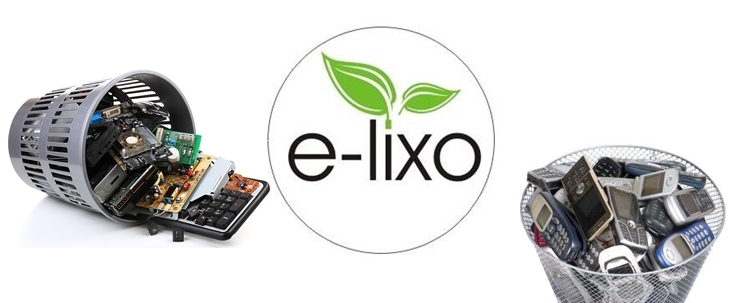
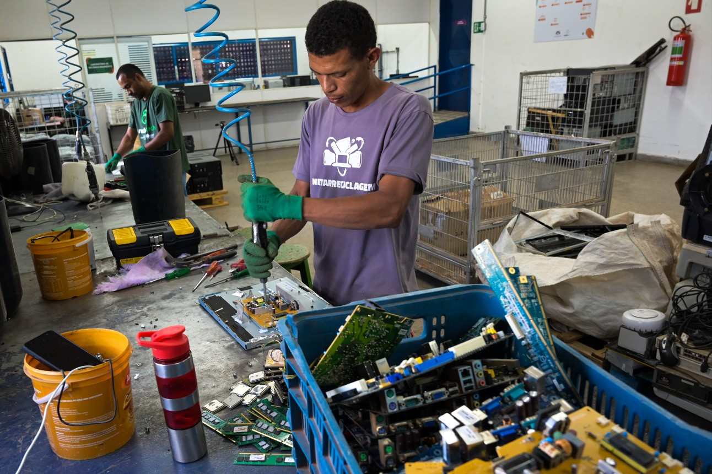
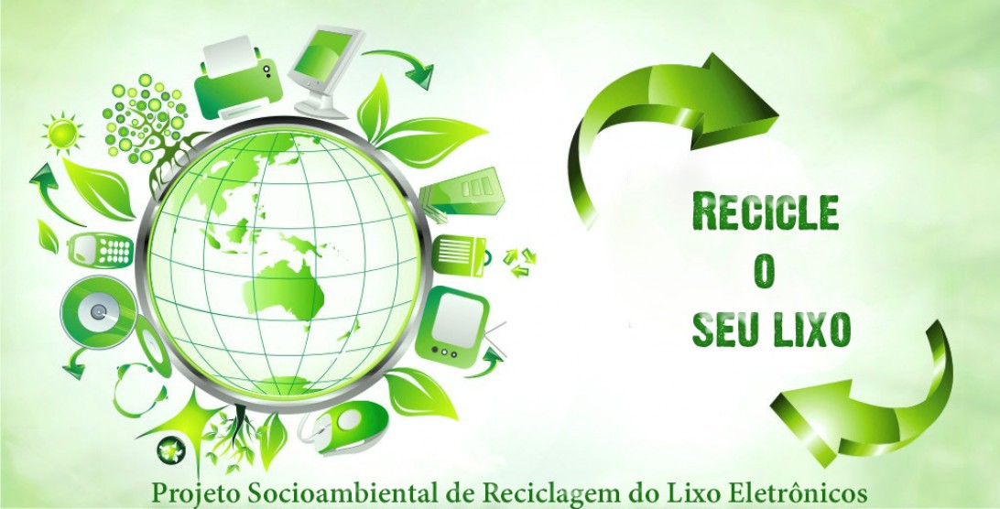

Informações Educacionais
A reciclagem de resíduos eletrônicos é essencial para preservar o meio ambiente e os recursos naturais. Ao reciclar, contribuímos para a redução da poluição, economia de energia e prevenção do descarte inadequado.
Alguns benefícios da reciclagem de resíduos eletrônicos:
- Redução da extração de materiais virgens
- Diminuição da poluição do solo e da água
- Economia de energia na produção de novos produtos
- Evita a liberação de substâncias tóxicas no ambiente
Contribua para um futuro sustentável! Veja abaixo algumas imagens que destacam a importância da reciclagem de resíduos eletrônicos:


